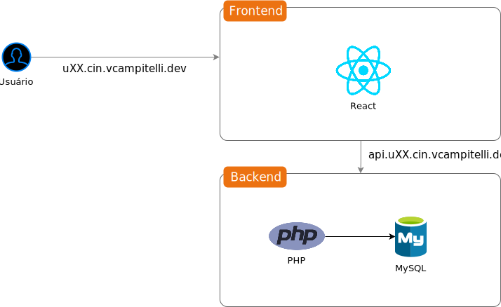
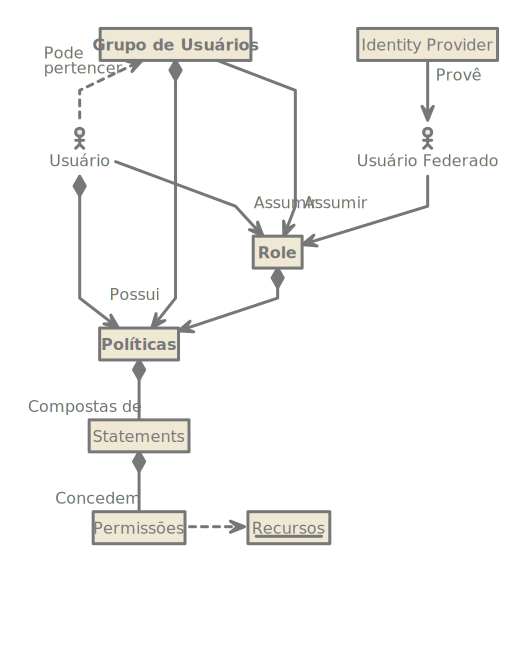
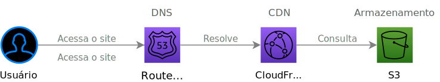
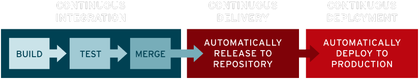
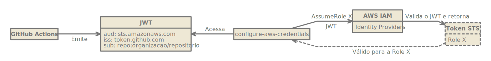

Criando uma
Infraestrutura
na Nuvem
Vinícius Campitelli
Sobre
Sobre
Sobre mim

Campitelli
- Bacharel em Ciência da Computação pela UFSCar
- Desenvolvedor há mais de 15 anos
- Membro do PHPSP
- Entusiasta em cibersegurança
- Consultor de TI e instrutor de treinamentos
GitHub
vcampitelliThreads
vcampitelliX Twitter
vcampitelliSobre
Acompanhamento
-
Clone este repositório
$ git clone --recursive git@github.com:vcampitelli/curso-criando-infra-nuvem.git -
Acesse os slides através do arquivo
docs/index.htmlem seu navegador - Certifique-se que você tenha o Docker e o Docker Compose instalados
-
Inicialize os containers da aplicação
$ cd demo $ docker compose up -d - Acesse localhost:5173 em seu navegador
Computação em Nuvem
Computação em Nuvem
História
-
Década de 60
Contexto: os computadores ("mainframes") são utilizados apenas por empresas, universidades ou governos, pois são extremamente grandes e caros
-
1961
John McCarthy, criador da linguagem LISP e pioneiro em Inteligência Artificial, propõe o conceito de computação utilitária, em que empresas alugariam tempo de uso de seus computadores
-
1997
Ramnath Chellappa, professor em uma Universidade de Atlanta, usa o termo "cloud computing" em um seminário para explicar um
paradigma onde os limites computacionais seriam determinados por questões econômicas e não somente por restrições técnicas
-
Julho de 2002
A Amazon lança uma plataforma para auxiliar terceiros no desenvolvimento de suas aplicações (principalmente lojas virtuais), diminuindo o tempo gasto para preparem a infraestrutura, chamada Amazon Web Services
Computação em Nuvem
Conceito segundo o NIST
... é um modelo para possibilitar acesso ubíquo, conveniente e sob demanda via rede a um conjunto de recursos computacionais configuráveis (como servidores, aplicações e armazenamento) que podem ser rapidamente provisionados e disponibilizados com o mínimo de esforço de gerenciamento ou interação com o provedorProposta SP 800-145
NIST é o Instituto Nacional de Padrões e Tecnologia dos Estados Unidos
Computação em Nuvem
Conceito segundo o NIST
Self-service sob demanda
Cliente deve provisionar serviços unilateralmente sem interação humana com o provedor
Acesso generalizado à rede
Serviços devem ser disponibilizados e acessados via mecanismos padrões de rede
Agrupamento de recursos
Devem servir múltiplos clientes, sendo atribuídos e reatribuídos de forma dinâmica
Elasticidade rápida
Recursos devem ser escaláveis para suportar a demanda
Serviço mensurável
Deve ser possível medir e monitorar o uso de cada serviço
Computação em Nuvem
Conceito
Disponibilização de recursos computacionais (como servidores ou armazenamento) via Internet que permite alta escalabilidade e provisionamento dinâmico de recursos com modelo de pagamento pay-as-you-go, onde o cliente só é cobrado pelo que foi exatamente utilizado (como tempo de processamento, espaço armazenado ou banda trafegada)
Computação em Nuvem
Vantagens
- Permite ao cliente focar no problema
- Velocidade de implementação
- Elasticidade de recursos
- Processamento distribuído
- Economia de custos (de modo geral)
Desvantagens
- Maior complexidade de início
- Vendor lock-in
- Ameaças de segurança (se não bem configurada)
- Gastos imprevisíveis (se não bem configurados)
Cloud Computing
Principais provedores

Computação em Nuvem
Principais modelos
IaaS → Infrastructure as a Service
Disponibilização de um servidor e seus recursos de hardware para que o cliente possa utilizar a infraestrutura da maneira que desejar
Exemplos: AWS EC2, Azure VM, Google Compute Engine, Digital Ocean
PaaS → Platform as a Service
O provedor cuida do servidor, do Sistema Operacional e das ferramentas necessárias para que o cliente possa executar sua aplicação
Exemplos: AWS Beanstalk, Google App Engine, Heroku, Netlify
SaaS → Software as a Service
Sistemas em que o usuário utiliza o software pela Internet, sem precisar baixá-lo e instalá-lo em seu computador ou rede
Exemplos: Wordpress.com, Wix, Canva
ibm.comComputação em Nuvem
Principais modelos
redhat.com
Aplicação
Aplicação
Arquitetura do exemplo
Amazon Web Services
Amazon Web Services
Visão geral
O principal provedor de cloud segundo o Gartner nos últimos 10 anos, com mais de 200 serviços disponíveis
aws.amazon.comAmazon Web Services
Alguns serviços
- API: API Gateway
- Armazenamento: S3, EFS
- Bancos de Dados: RDS, DocumentDB, MemoryDB
- CDN: CloudFront
- Configurações: Systems Manager
- Containerização: ECS, EKS
- DNS: Route 53
- Desenvolvimento: CodeBuild, CodeCommit, CodeDeploy, CodePipeline
- Mensageria: EventBridge, SQS
- Monitoramento: CloudWatch
- Mídia: MediaConvert, MediaLive
- Processamento: EC2
- Provisionamento: CloudFormation
- Segurança: IAM, KMS
- Serverless: Lambda
Amazon Web Services
Infraestrutura global
Regiões (Regions)
Local físico onde um grupo de datacenters está localizado
Amazon Web Services
Infraestrutura global
Zonas de disponibilidade (Availability zones)
Cada grupo de datacenters em uma região com alta conectividade entre si, úteis para prover alta disponibilidade dentro de uma região
Amazon Web Services
Infraestrutura global
Zonas locais (Local zones)
Locais alternativos mais próximos a grandes cidades para diminuir a latência
Amazon Web Services
Infraestrutura global
34 regiões
108 zonas de disponibilidade
245 países e territórios atendidos
Amazon Web Services
Rede global de borda (edge network)
 aws.amazon.com/cloudfront
aws.amazon.com/cloudfront
Amazon Web Services
Free Tier
Disponibilização de serviços gratuitos na AWS em três categorias: testes gratuitos, 12 meses gratuitos ou sempre gratuitos
Nível gratuito da AWSAmazon Web Services
Prática
Vamos criar uma conta na AWS, acessá-la e entender os principais conceitos de navegação
Amazon Web Services
AWS CLI
Ferramenta de linha de comando (terminal) para gerenciar sua conta da AWS
AWS Command Line InterfaceServiços
AWS IAM
Serviços » IAM
Definição
O AWS Identity and Access Management é um serviço responsável pela gestão de identidades e acesso aos serviços de contas da AWS
docs.aws.amazon.comServiços » IAM
Entidades
Usuário
Entidade que representa uma pessoa ou aplicação que irá interagir com a AWS, que possui suas próprias credenciais (access keys) e deve receber as permissões necessárias para liberar acesso aos recursos da AWS
Access Key
Par de chaves (access key ID e secret access key) que garante acesso a um usuário
Serviços » IAM
Entidades
Função (role)
Identidade que também pode receber permissões e que permite que usuários a incorpore para receber o acesso desejado
Política (policy)
Conjunto de permissões permitindo ou negando o acesso à elas, que podem ser aplicadas a usuários, grupos de usuários ou funções
Serviços » IAM
Entidades
Serviços » IAM
Prática
Vamos criar um usuário e ver na prática como essas entidades se relacionam
AWS IAMServiços para nosso frontend
Hospedagem
Serviços para nosso frontend
Hospedagem
Como nosso frontend é composto apenas de arquivos estáticos (HTML, CSS, JavaScript, imagens etc...), podemos utilizar os serviços de armazenamento de arquivos da cloud, como é o caso do AWS S3 (Simple Storage Service)
aws.amazon.com/s3Serviços para nosso frontend
Hospedagem
O Amazon Simple Storage Service é um serviço de armazenamento de objetos que oferece escalabilidade, disponibilidade de dados, segurança e desempenho líderes do setor
Com classes de armazenamento econômicas e recursos de gerenciamento fáceis de usar, você pode otimizar custos, organizar dados e configurar controles de acesso ajustados para atender a requisitos específicos de negócios, organizacionais e de conformidadeaws.amazon.com/s3
Serviços para nosso frontend
Exemplos de uso do S3

Serviços para nosso frontend » S3
Prática
Criaremos um bucket, que é como um "disco" com configurações como localização geográfica, políticas de versionamento e backup, sendo o responsável por conter nossos arquivos
aws.amazon.com/s3Serviços para nosso frontend » S3
Prática
- Selecione o serviço S3 no painel da AWS
- Clique no botão Create bucketCriar bucket
- Escolha um nome único para o bucket, que deve ser globalmente exclusivo (ou seja, não pode coincidir nem com o de outras contas)
- Desmarque a opção Block all public access Bloquear todo o acesso público
- No alerta que irá aparecer logo abaixo dizendo que o bucket terá acesso público, marque o checkbox dizendo que você está ciente
- No final da página, clique em Create bucketCriar bucket para concluir
Serviços para nosso frontend » S3
Prática
- Ao ser redirecionado para a listagem, clique no bucket recém-criado
- Vá até a aba PropertiesPropriedades, desça até a seção Static website hostingHospedagem de site estático e clique em EditEditar
-
Ative a opção de hospedagem de site estático, e defina os campos
Index documentDocumento de índice e
Error documentDocumento de erro como
index.html - Clique em Save changesSalvar alterações para salvar a configuração
Serviços para nosso frontend » S3
Prática
- Na tela de detalhes do bucket, clique na aba PermissionsPermissões
-
Em Bucket policyPolítica do bucket, clique em
EditEditar e cole o conteúdo abaixo no editor,
alterando
Nome-Do-Bucketna linha 8 pelo nome do seu bucket:{ "Version": "2012-10-17", "Statement": [ { "Effect": "Allow", "Principal": "*", "Action": "s3:GetObject", "Resource": "arn:aws:s3:::Nome-Do-Bucket/*" } ] } - Clique em Save changesSalvar alterações para salvar a política
Serviços para nosso frontend » S3
Prática
- Vá até a aba ObjectsObjetos para ver a listagem de arquivos do seu bucket
-
Clique no botão UploadCarregar e, na tela que
abrir, clique em Add filesAdicionar arquivos e
escolha o arquivo
demo/frontend-exemplo-s3/index.htmldesse repositório - No final da página, clique em UploadCarregar para subir o arquivo, aguarde alguns instantes e, se o processo der certo, clique em CloseFechar no alerta de sucesso
- Ao ser redirecionado novamente para a tela de propriedades, desça mais uma vez até a seção Static website hostingHospedagem de site estático, copie o endereço do endpoint exibido e acesse-o em seu navegador
-
Você deverá ver um
Hello, world!na tela
Serviços para nosso frontend
Distribuição do Conteúdo
Serviços para nosso frontend
Distribuição do Conteúdo
Um Serviço de Rede de Entrega de Conteúdo (do inglês Content Delivery Network, resultando na sigla CDN) é responsável pelo caching e distribuição de conteúdo a partir de uma das localizações de borda mais próximas de seus clientes
O que é rede de distribuição de conteúdo (CDN)?Serviços para nosso frontend
Distribuição do Conteúdo
 aws.amazon.com/cloudfront
aws.amazon.com/cloudfront
Serviços para nosso frontend » CloudFront
Rede global de borda (edge network)
aws.amazon.com/cloudfront
Serviços para nosso frontend » CloudFront
Conceitos
Origem
Servidor que está rodando e servindo a aplicação
Distribuição
Cadastro criado para cada origem, com suas configurações e políticas de caching
Invalidação
Ação de marcar um objeto (ou grupo de objetos) como obsoletos, fazendo com que o CloudFront busque novamente da origem
aws.amazon.com/cloudfrontServiços para nosso frontend » CloudFront
Prática
Iremos criar uma distribuição no CloudFront e apontá-la para o bucket S3 que criamos com os arquivos estáticos do frontend
aws.amazon.com/cloudfrontServiços para nosso frontend » CloudFront
Prática
- Primeiro, precisamos desabilitar o acesso público e a hospedagem de site do bucket, pois apenas o CloudFront terá acesso a ele
- Selecione o serviço CloudFront no painel da AWS
- Clique em Create Distribution
- Em Origin Domain, encontre o bucket criado anteriormente
- Em Origin access, selecione Origin access control settings
- No campo que aparecer, clique em Create new OAC e, no modal, apenas clique em Create — um aviso irá ser exibido dizendo que precisaremos configurar a política do bucket
- Em Web Application Firewall (WAF), marque Do not enable security protections, já que estamos apenas testando e esse recurso não é barato
Serviços para nosso frontend » CloudFront
Prática
-
Em Default root object, preencha
index.html - Clique em Create Distribution para finalizar
- Ao ser redirecionado para a tela de detalhes da distribuição, um alerta amarelo irá relembrar que precisamos configurar a política do bucket
- Nesse alerta, clique no botão Copy policy e depois no link Go to S3 bucket permissions to update policy
- Vá até a aba PermissionsPermissões do bucket e edite a Bucket policyPolítica do bucket, colando no editor a política que você copiou da distribuição do CloudFront
-
Volte até a distribuição do CloudFront, aguarde o campo Last modified mudar
do estado
Deployingpara uma data, copie o endereço de Distribution domain name e acesse-o em seu navegador -
Você deverá ver novamente o mesmo
Hello, world!na tela
Serviços para nosso frontend » CloudFront
Prática
- Vamos voltar à distribuição para configurar o HTTPS utilizando o AWS Certificate Manager
- Na seção Settings, clique no botão Edit
- Em Custom SSL certificate, clique em Request certificate e, na tela que abrir do Certificate Manager, clique em NextPróximo
- Preencha com o nome do domínio em Fully qualified domain nameNome de domínio totalmente qualificado
-
Clique no botão Add another name to this certificateAdicionar outro nome a este certificado e, no novo campo, insira o
mesmo domínio, mas prefixe o subdomínio
api. - Desça até o final da tela e clique em RequestSolicitar
Serviços para nosso frontend » CloudFront
Prática
- Após alguns segundos, você será verá os detalhes do certificado
- Copie as colunas CNAME nameNome CNAME e CNAME valueValor CNAME e cole-as na planilha
- Me acompanhe enquanto eu crio essas entradas no DNS
- Volte para a tela de edição do CloudFront, vá até a seção Alternate domain name (CNAME), clique em Add item e preencha o nome de domínio
- Em Custom SSL certificate, selecione o certificado gerado
- Clique em Save changesSalvar alterações para gravar as mudanças
- Acesse o domínio em seu navegador (dependendo do seu serviço de DNS, isso pode demorar um pouco)
Serviços
DNS
Serviços
DNS
O Domain Name System é um serviço que tem como principal funcionalidade a conversão de domínios legíveis por seres humanos (por exemplo google.com) em endereços IP (por exemplo 142.251.132.238)
Existem diversos serviços, como o CloudFlare (gratuito) ou AWS Route 53 (pago, mas com diversas integrações com outras ferramentas da AWS)
cloudflare.com/learning/dnsServiços
Route 53
Serviço de DNS altamente integrado com funcionalidades da AWS (como EC2, S3, ELB), onde o usuário é cobrado pelas zonas hospedadas e número de consultas realizadas, não sendo disponibilizado no Free Tier
aws.amazon.com/route53Serviços » Route 53
Exemplos de uso

aws.amazon.com/route53
Serviços » Route 53
Prática
- Selecione o serviço Route 53 no painel da AWS
- No painel de navegação lateral, clique em Hosted zones Zonas hospedadas
- Clique no botão Create hosted zoneCriar zona hospedada
- Preencha o nome do domínio desejado
- Clique no botão Create hosted zoneCriar zona hospedada para confirmar a criação
Arquitetura
Frontend
Arquitetura
Frontend
Deploy
Deploy
CI/CD
CI/CD, continuous integration/continuous delivery, é um método para entregar aplicações com frequência aos clientes. Para isso, é aplicada a automação nas etapas do desenvolvimento de aplicações. Os principais conceitos atribuídos a esse método são a integração, entrega e implantação contínuas.Red Hat
Deploy
Fluxos de CI/CD
 Red HatDeploy
Ferramentas de CI
- Sistemas de Versão
- Cloud
- Ferramentas avulsas
Deploy
GitHub Actions
Deploy » GitHub Actions
Conceito
Automatize, personalize e execute seus fluxos de trabalho de desenvolvimento do software diretamente no seu repositório com o GitHub Actions. Você pode descobrir, criar e compartilhar ações para realizar qualquer trabalho que desejar, incluindo CI/CD, bem como combinar ações em um fluxo de trabalho completamente personalizado.Documentação do GitHub Actions
Deploy » GitHub Actions
Sintaxe
Um Fluxo de trabalho ("workflow") é configurado através de um arquivo
YAML na pasta
.github/workflows do seu repositório
Deploy » GitHub Actions
Sintaxe
Cada Fluxo é composto por:
- Gatilhos ("triggers") responsáveis por dispará-lo, como push em alguma branch, pull request aberta, issue criada, sistema de agendamento (como o "cron"), entre outros
- Jobs que podem ser executados de maneira sequencial ou em paralelo entre si, que serão executados em runners (geralmente um container)
- Os Jobs são compostos de etapas ("steps") para executar scripts definidos por você ou ações de terceiros (que são disponibilizadas como pacotes)
Deploy » GitHub Actions
Sintaxe
name: Backend
on:
push:
branches: [ "main" ]
pull_request:
branches: [ "main" ]
jobs:
job1:
name: Nome do primeiro job
runs-on: ubuntu-latest
steps:
- name: "Passo que usa um pacote pronto"
uses: autor/pacote@versao
with:
configuracao1: valor1
configuracao2: valor2
configuracao3: valor3
configuracao4: ${{ secrets.VARIAVEL_DO_SECRETS }}
- name: "Passo que executa comandos no shell"
run: |
comando1 args...
comando2 args...
comando3 args...
job2:
name: Nome do segundo job
runs-on: ubuntu-latest
needs: job1
if: github.ref == 'refs/heads/main'
steps:
- name: Login to Container Registry
uses: docker/login-action@v3
with:
registry: ${{ env.REGISTRY }}
username: ${{ github.actor }}
password: ${{ secrets.GITHUB_TOKEN }}
Deploy » GitHub Actions
Dica
Ao invés de ficar fazendo push ou outras ações reais no seu repositório para rodar
um workflow, recomendo usar o
nektos/act, ferramenta que permite executá-lo localmente
em sua máquina,
simulando os eventos de gatilho
Deploy
GitHub Actions
Exemplo de pipeline:
jobs:
job1:
name: Nome do primeiro job
runs-on: ubuntu-latest
steps:
- name: Checkout do código
uses: actions/checkout@v4
- name: Configurando ambiente
run: apt-get update && apt-get install jq
- name: Instalando dependências de desenvolvimento
run: npm install --production=false
- name: Análise estática do código
run: |
npm run lint
sonarscanner src/
- name: Build de desenvolvimento
run: npm run build:dev
- name: Testes
run: npm test
- name: Instalando dependências de produção
run: npm install --production=true
- name: Build de produção
run: npm run build
- name: Deploy
run: ./deploy-to-production build/
- Checkout do código
- Configuração do ambiente
- Instalação de dependências de desenvolvimento
-
Análise estática do código
- Linting
- Análise de segurança
- Build de desenvolvimento
-
Testes
- Testes de unidade
- Testes de integração
- Testes End-to-end
- Instalação de dependências de produção
- Build de produção
- Deploy
Deploy » GitHub Actions
Prática
Vamos criar um workflow para fazer o deploy do nosso frontend sempre
que houver um push na main
Deploy » GitHub Actions
Usando OIDC
Vários serviços (como os provedores de cloud) possuem integrações via OpenID Connect (OIDC), protocolo de autenticação baseado no OAuth 2, removendo a necessidade de usar credenciais como access tokens e garantindo maior segurança e praticidade
About security hardening with OpenID Connect - GitHub DocsDeploy » GitHub Actions
Usando OIDC
Para isso, configure na AWS uma relação de confiança, dizendo que determinados tokens JWt emitidos pelo GitHub Actions podem ter acesso à sua conta, e remova o uso das access keys de seu workflow
Deploy » GitHub Actions
Como funciona o OIDC?
Deploy » GitHub Actions
Usando OIDC
Exemplo sem uso de OIDC:
jobs:
build:
runs-on: ubuntu-latest
steps:
- name: "Checkout do código"
uses: actions/checkout@v4
- name: "Configurando AWS"
uses: aws-actions/configure-aws-credentials@v4
with:
aws-region: ${{ env.AWS_REGION }}
access_key_id: ${{ secrets.AWS_ACCESS_KEY_ID }}
secret_access_key: ${{ secrets.AWS_SECRET_ACCESS_KEY }}
- name: "Subindo no S3"
run: aws s3 sync ./dist/ s3://${{ env.AWS_BUCKET_NAME }}/ --delete
Deploy » GitHub Actions
Usando OIDC
Exemplo com uso de OIDC:
jobs:
build:
runs-on: ubuntu-latest
steps:
- name: "Checkout do código"
uses: actions/checkout@v4
- name: "Configurando AWS"
uses: aws-actions/configure-aws-credentials@v4
with:
aws-region: ${{ env.AWS_REGION }}
role-to-assume: ${{ secrets.AWS_ROLE }}
- name: "Subindo no S3"
run: aws s3 sync ./dist/ s3://${{ env.AWS_BUCKET_NAME }}/ --delete
Deploy » GitHub Actions
Usando OIDC
Prática
Vamos configurar um Identity Provider na AWS, liberando acesso via OIDC para que tokens JWT emitidos pelo GitHub Actions para nosso repositório possam assumir uma determinada Role
Amanhã...
Veremos como utilizar EC2, RDS, Balanceador de Carga, Auto Scaling e o CodeDeploy para nosso backend
Também veremos como criar um ambiente de sandbox para nossas duas aplicações
Obrigado!
GitHub
vcampitelliThreads
vcampitelliX Twitter
vcampitelli